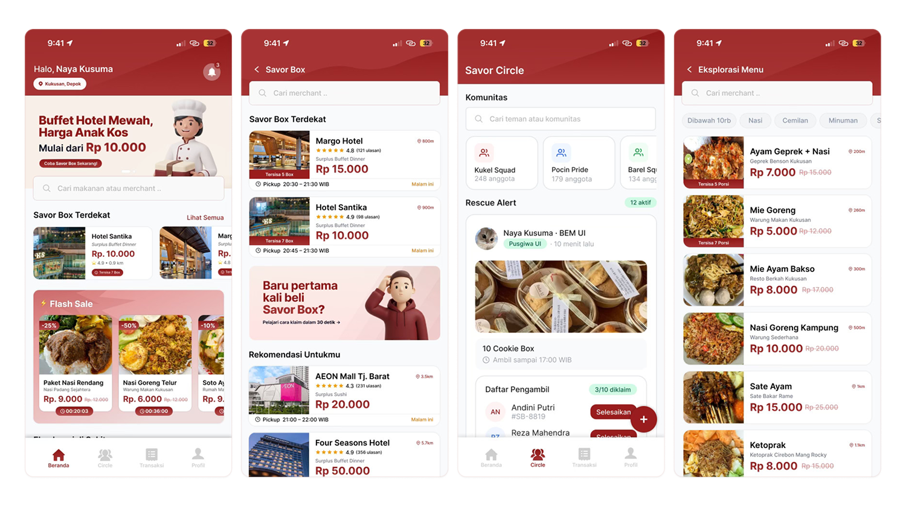

The tragic irony of campus food
Despite Indonesia discarding up to 48 million tons of food annually, contributing massively to methane emissions, students on campus are routinely skipping meals due to tight budgets. The tragic irony lies in campus canteens throwing away perfectly good unsold food at 5 PM while hungry students study just buildings away.
"Gue sering sih nahan lapar sore karena udah mau abis uang jajannya, padahal tau sendiri kantin masih banyak sisa makanan yang akhirnya dibuang."
"Gue pernah jadi panitia seminar fakultas, sisa 30 kotak snack dan akhirnya kita buang semua karena nggak tau mau dikasih ke siapa."
Validating the assumption
Based on 65 respondents: 35 users (students + general public) and 30 merchants (canteens, cafes, warungs).
98%
of students have skipped or reduced meals due to budget constraints.
77%
willing to buy quality surplus food at 50–70% discount.
90%
of merchants gave maximum interest (5/5) in joining.
83%
of merchants said leftover food is just thrown away.
51%
of students are most hungry at 4–5 PM, identical to merchant closing time.
43%
of merchants have never calculated monthly financial loss from food waste.
"Saya tertarik sekali. Yang penting prosesnya gampang, jangan sampai saya harus input banyak-banyak. Saya kan sibuk masak, nggak bisa pegang HP terus."
How we got there
Empathize
3-day field observation at campus canteens (2–5 PM). Semi-structured interviews with 10 students + 10 merchants. 65-respondent online survey.
Define
How might we help merchants distribute surplus food in under 5 minutes of input? And how might we make budget-conscious students feel they're getting real value, not just 'buying leftovers'?
Ideate
Crazy 8s → 24 rough concepts → dot voting → 3 core features prioritized: Savor Box, Savor Circles, Savor Points.
Prototype
Lo-fi wireframes to validate IA (max 4 taps to complete a Savor Box transaction). Then full high-fidelity with documented design system.
Test + iterate
Think-aloud usability testing with 5 users (3 students, 2 merchants). Severity rating 1–4 per issue. 3 critical fixes shipped in next sprint.
Key design decisions
The "why" behind the screens.
Merchant input: 6 steps → 3 steps
Usability testing showed merchants struggled with the original flow. Ibu kantin's feedback ("I can't hold the phone the whole time") drove us to consolidate listing into 3 steps with auto-weight estimation.
Walking-distance pickup as default
Delivery-first would contradict the CO₂ reduction mission. Walking pickup matches campus food culture. Delivery is available but never the default suggestion.
CO₂eq framed as "plates of food"
Abstract CO₂ numbers felt disconnected. Adding a relatable food equivalent ("X plates of nasi goreng") increased perceived value of the Impact Dashboard and motivated repeat use.
Savor Points expire in 30 days
Creates a sense of urgency and a 'use it or lose it' mentality, driving higher monthly active usage. Without expiry, the gamification loop loses its impact.
Final polished UI

Outcome & lessons learned
What changed
3 critical UX issues resolved: confusing Savor Box concept (fixed with tooltip), complex merchant input (reduced to 3 steps), abstract CO₂ numbers (added food equivalent). The revised flow was validated by re-testing with the same participants, who completed the Savor Box transaction without prompting on their second attempt.
What I'd do differently
I'd run a dedicated usability test for Savor Circles (the C2C feature) with actual event organizers and student committees, it was designed based on survey data alone and never tested as a standalone flow. I'd also push for a live pilot with even one merchant before finalizing the merchant dashboard.
What I learned
Designing for two completely different user types in the same product taught me that simplicity isn't a style choice, for ibu kantin who's actively cooking and can't look at her phone for more than 10 seconds, it's a hard functional requirement. Features that felt essential from a product perspective had to be cut or hidden.